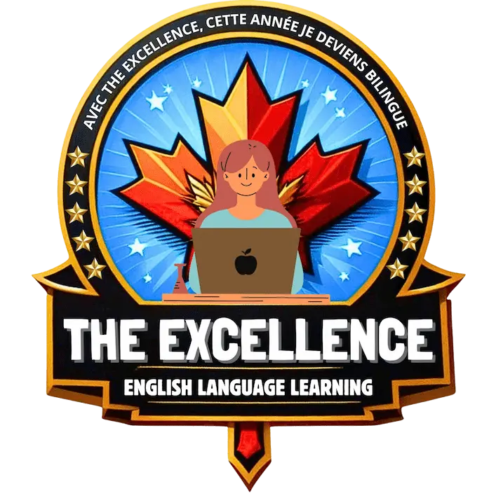
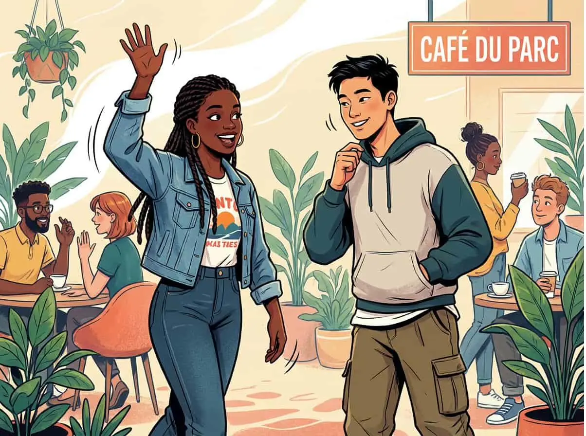

LE PORTFOLIO HPP
Des convictions.
Des formes multiples.
Des créations publiées, des supports produits et un atelier numérique en développement. Chaque projet raconte une autre facette de la maison.
CRÉATION PUBLIÉE / ÉVANGÉLISATION
Deux orientations.
Une série visuelle sur le choix des chemins, inspirée de Matthieu 7:13–14. L’illustration et la composition donnent une forme immédiate au message.
 Voir la publication sur Instagram ↗
Voir la publication sur Instagram ↗IDENTITÉ & IMAGES ÉDITORIALES / RÉALISÉ
The Excellence.
Conception du logo et production des visuels intégrés aux syllabus The Excellence : une contribution de Heavenly Places Productions à l’identité et aux supports de la marque.


- Notre contribution
- Logo et création des images
- Supports
- Identité de marque et syllabus
CRÉATION TEXTILE / PRODUIT
Roar for Canada.
Des designs devenus des T-shirts pour les équipes de la conférence Roar for Canada. Une réalisation qui fait passer la création graphique de l’écran à un support porté lors d’un événement.
- Notre contribution
- Création des designs et production des T-shirts
- Destination
- Équipes de la conférence
Cette réalisation appartient à notre portfolio. Ces T-shirts ne sont pas proposés à la vente.
Imaginer vos supports événementiels ↗RECHERCHE & DÉVELOPPEMENT
L’atelier numérique.
Nous développons aussi nos propres expériences numériques. Ces projets en cours nourrissent notre pratique de l’interface, du prototypage et de l’IA.
BreniCall
Un projet de messagerie avec appels, échanges en direct et expériences interactives.
Le Grand Cerveau
Une exploration de l’orchestration de missions IA, de la traçabilité des étapes et de la vérification des résultats.
Ces projets ne sont pas présentés comme des produits finalisés ou disponibles à la vente.
Construire votre prototype ↗Et votre projet ?
Parlons du message que vous souhaitez transmettre et de la forme qui lui conviendrait.
Écrire au studio